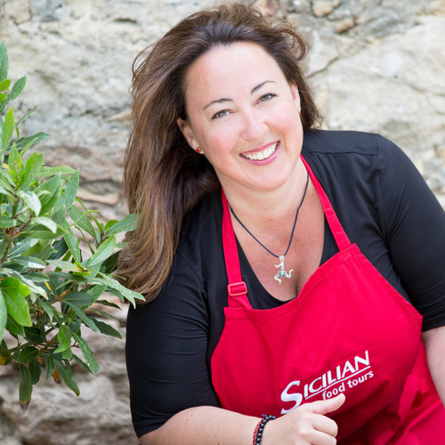
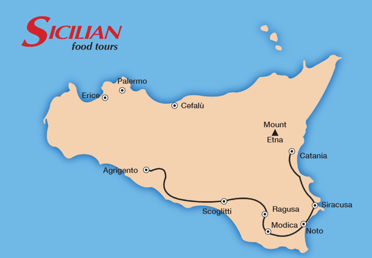

It’s been a dream of mine to take people from all over the world through my island of Sicily to experience it the way I do.
— Carmel x
Join restaurateur Carmel Ruggeri as she takes you through her part of the world, her island, Sicilia.
Immerse yourself in Sicilian food and culture through Carmel’s eyes and that of her Sicilian family.
Share a once-in-a-lifetime experience on the beautiful island of Sicily, where the mountains meet the sea and family and food are its heart and soul.
This tour commences in the undiscovered south coast of Sicily, at the small fishing village of Scoglitti, and explores the beautiful attractions of Siracusa, Noto and Agrigento.
Itinerary
FRIDAY 8 JUNE – CATANIA TO SCOGLITTI
We meet at Catania Airport for a bus trip to the undiscovered south coast of Sicily to the small fishing village of Scoglitti overlooking the Mediterranean Sea. Here we settle into our beachfront hotel for lunch on the beach where we sample the first of our many Sicilian delights prepared by cousin Carmel, who also gives us our first cooking class.
Carmel will then take us on an afternoon walk around the town, our home for the next seven days, including a stopover at the fish markets. We will of course stop for our first gelato at Carmel’s cousin Franco’s bar.
In the evening, dinner at one of Scoglitti’s best restaurants for a 15 course degustation.
SATURDAY 9 JUNE – MODICA, VALLE DELL’ACATE WINERY AND RAGUSA IBLA
We spend the morning discovering the beautiful Baroque Valley of Ragusa, Modica. Here we visit Antica Dolceria Bonajuto, the oldest chocolate factory in Sicily founded in 1880.
We then visit the Valle dell’Acate winery run by the Jacono family where our host Giovanni Carbone takes us through the original 19th century palmento for a tasting of Frappato, Nero D’avola and Cerasuolo, Sicily’s only DOCG wine, this is followed by a light rustic Sicilian lunch.
This evening we take a walk through the cobblestone town of Ragusa Ibla, always a tour highlight. Ragusa Ibla hosts a wide array of Baroque architecture including palaces and churches. We enjoy a special dinner at one of the locals’ favourite trattoria. .

SUNDAY 10 JUNE – SCOGLITTI
Today is all about family. We enjoy a traditional Sicilian Sunday lunch feast at Carmel’s aunt’s home, where food and wine will be aplenty. We try the famous traditional Sicilian digestif Averna, which comes from nearby Caltanisetta.
Before lunch, Zia Maria and cousin Carmel will demonstrate how they make Sunday sugo, fresh pasta, caponata, Ragusani scacce (folded pizza) and sfingi, a type of Sicilian donut. Time to roll up our sleeves, join in and have some fun cooking.
Afterwards we enjoy a stroll, “the passeggiata” with the locals. Free time in the evening for more strolls and/or a visit to a pizzeria, restaurant or gelato bar at your leisure.
MONDAY 11 JUNE – SIRACUSA AND NOTO
This morning we head to the fish markets in Ortigia on the East coast of Sicily. This is followed by a stroll through the beautiful Ortigia, a small island which is the historical centre of the city of Syracuse. The island, also known as Città Vecchia, contains many historical landmarks including the spectacular Duomo di Siracusa. We wander through the narrow medieval lanes and head to lunch at one of Ortigia’s famous trattorias.
We spend the afternoon at the UNESCO heritage town of Noto, one of Sicily’s most beautiful towns, flanked by grandeur baroque palazzi and churches. We visit the famous Caffe Sicilia, home of Sicily’s most famous pastry chef, Corrado Assenza.
Tonight it’s pizza night.
TUESDAY 12 JUNE – AGRIGENTO
This morning we make our way to the region of Agrigento, stopping on the way at Baglio del Cristo di Campobello winery for a tasting. Campobello is one of Sicily’s biggest wine exporters to Australia.
Today is Carmel’s birthday, so it’s only fitting that we celebrate it in style with a long lunch at one of her favourite spots on the south west coast of Sicily, Lido Canaima located in Montallegro. Carmel’s dear friend Chef Leonardo will prepare an amazing lunch with an endless supply of Aperol Spritz.
Late this afternoon we head to the Valley of the Temples to explore one of Sicily’s most famous historical attractions and a UNESCO World Heritage Site consisting of eight temples built between about 510 BC and 430 BC. This archaeological park and landscape is the largest archaeological site in the world with 1,300 hectares.
We make our way back to Scoglitti in the early evening.
WEDNESDAY 13 JUNE – SCOGLITTI
We head to the local pasticerria in town for a traditional Sicilian breakfast, granita with brioche. Here pastry Chef Stefania demonstrates how to make ricotta cannoli.
Then we are off to the local ricotta farm to see how Sicily’s favourite cheese is made, like only the Ragusani know how to make it. Here we sample the most delicious ricotta at various maturity levels.
We then visit an eggplant and tomato farm where tomatoes have been cultivated for decades. Ragusa is perfect for the tomato farms with its arrid, sandy, flat land. We take a walk through the “serre”, tomato houses and then enjoy a delicious rustic BBQ lunch featuring tomatoes of course and delicious pork and fennel Sicilian sausages.
Tonight we have our farewell dinner.
THURSDAY 14 JUNE – SCOGLITTI TO CATANIA
Breakfast at hotel. Our Sicilian Food Tour concludes. Shuttle will depart at 9am for Catania Airport from the Scoglitti hotel.
7 DAYS & 6 NIGHTS
Included in price:
- 6 nights in standard hotels
- Private vehicle with a professional driver
- 9 x main meals (lunch/dinner) per person
- All activities specified in the itinerary, including entry fees and local guides where appropriate.
- Personal services of restaurateur Carmel Ruggeri, a bilingual Italo Australian whose heart lives in Sicily.
To book please email
info@sicilianfoodtours.com or complete our online form:
Book now – $4,000 AUD per person twin share, taxes included. Conditions apply.
Photography by Gina Milicia 2016
Brochure: Tinka Marketing & Events